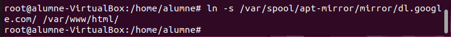

Servidor d'Actualitzacions
Definició d'un Servidor d'Actualitzacions
Un servidor d'actualitzacions és un sistema centralitzat que actua com a intermediari entre els clients i els repositoris d'actualitzacions. En lloc que cada dispositiu es connecti directament als repositoris en línia, totes les actualitzacions es descarreguen prèviament al servidor i després es distribueixen als clients, optimitzant així l'ús de la xarxa i millorant el control sobre els paquets instal·lats.
Com Funciona?
Aquest tipus de servidor es basa en eines com apt-mirror i apache2, que permeten descarregar i servir els paquets d'actualització de manera local. Quan els dispositius client executen apt update, en lloc de connectar-se a Internet, obtenen les dades del servidor intern, garantint una administració centralitzada i més eficient.
- Emmagatzematge local de paquets: El servidor conserva còpies de tots els paquets requerits.
- Procés d'actualització controlat: Els clients accedeixen als paquets des del servidor, evitant dependències externes.
Aplicacions i Beneficis
Aquest model resulta especialment avantatjós en diferents situacions:
- Organitzacions i empreses: Assegura un major control sobre les versions instal·lades, mantenint la seguretat i la coherència en tots els sistemes.
- Xarxes amb accés limitat a Internet: Permet actualitzar dispositius sense necessitat de connexió directa a repositoris externs.
- Validació prèvia d'actualitzacions: Possibilita la comprovació de compatibilitat abans de desplegar noves versions als usuaris.
- Supervisió i registre: Facilita l'auditoria de les actualitzacions, permetent un seguiment detallat de les descàrregues i instal·lacions.
Avantatges i Inconvenients
| Avantatges | Inconvenients |
|---|---|
| Gestió centralitzada: Control més eficient sobre els paquets i les seves versions. | Dependència d’un únic servidor: Si el servidor falla, els clients no poden obtenir actualitzacions. |
| Reducció del consum de xarxa: Minimitza la càrrega d’Internet en grans infraestructures. | Manteniment constant: Requereix administració per garantir un funcionament òptim. |
| Homogeneïtzació de versions: Tots els equips reben les mateixes actualitzacions, evitant discrepàncies. | Complexitat inicial: La configuració requereix coneixements tècnics i temps. |
Mesures de Seguretat
- Filtrat de paquets: Permet seleccionar i distribuir només aquells paquets que han estat verificats, evitant riscos de seguretat.
- Protecció en xarxes privades: Redueix l'exposició dels dispositius, ja que no necessiten connexió directa a Internet.
- Autenticació i control d’accés: Registre i validació dels clients que sol·liciten actualitzacions per a una gestió més segura.
Configuració del Servidor
Instal·lació de les eines necessàries
sudo apt update && sudo apt install apache2 apt-mirror
Ajustar la configuració d'apt-mirror
Editar el fitxer /etc/apt/mirror.list per definir quins repositoris es volen replicar:
sudo nano /etc/apt/mirror.list
Després, cal executar apt-mirror per iniciar la descàrrega dels paquets configurats:
sudo apt-mirror
Finalment, s’ha de crear un enllaç simbòlic perquè els paquets siguin accessibles a través d’Apache2.
sudo ln -s /var/spool/apt-mirror/mirror/dl.google.com /var/www/html

Configuració dels Clients
Importar la clau de signatura
Editar la font d’actualitzacions
sudo nano /etc/apt/sources.list
Afegir la línia corresponent al servidor d'actualitzacions (substituir per la IP adequada):
deb [arch=amd64] http://10.0.2.15/dl.google.com/linux/chrome/deb stable main
Actualitzar la informació de paquets
sudo apt update
Instal·lar un paquet des del servidor local
sudo apt install google-chrome-stable